Обучение психологическому консультированию — это путь к освоению востребованной и социально значимой профессии. Чтобы стать практическим психологом и получить квалификацию психолога-консультанта, необходимо пройти профессиональную переподготовку, включающую освоение навыков консультирования, методов психологической помощи и практических навыков. Обучение проходит дистанционно на удобной платформе с поддержкой преподавателей и доступом к учебным материалам. Мы составили рейтинг программ, где обучение проводится в дистанционном формате — это удобный формат получения знаний, позволяющий совмещать обучение с работой. После прохождения курсов выпускники получают диплом установленного образца и могут вести психологическую практику.
Информация обновлена:
ТОП онлайн-курсов по психологическому консультированию
- 🏆 Психологическое консультирование — Московский Институт Психологии (по промокоду onlinekursy скидка 🎁 10%)
- 🏆 Психолог-консультант — НАДПО (по промокоду onlinekursy действует скидка 🎁 5%)
- 🏆Практический психолог — Онлайн-институт Smart
- Профессия психолог-консультант — Психодемия (по промокоду OnlineKursy действует скидка 🎁 5000 руб)
- Психолог-консультант — Talentsy
- Профессия психолог-консультант — Нетология
- Психолог-консультант — MITM
- Практическая психология — МШПП
- Психолог-консультант с психоанализом: Методы и технологии оказания психологических услуг — МИПО (по промокоду onlinekursy действует скидка 🎁 10%)
- Консультативная психология: эффективные стратегии практической психологической помощи — ИППСС
- Обучение профессии психолога — Академия EDPRO
- Психолог-консультант. Психологическое консультирование — Московская Бизнес Академия
- Психолог-консультант. Методы и технологии оказания психологических услуг — НЦРДО (по промокоду onlinekursy действует скидка 🎁 5%)
- Практическая психология с дополнительной специализацией в области психологического консультирования — НИИДПО
- Психолог-консультант. Методы и технологии оказания психологических услуг — ИПО
- Психолог-консультант с дополнительной специализацией в области психотерапии — ЦАППКК (по промокоду onlinekursy действует скидка 🎁 5%)
- Профессия психолога-консультанта — МШП
- Психологическое консультирование — АПОК
- Психологическое консультирование — ЭКОДПО
Бесплатные курсы по обучению на психолога-консультанта
- Что важно для профессии психолога — Психодемия
- Все о профессии психолог-консультант — Психодемия
- Бесплатный вводный курс Профессия психолог-консультант — Talentsy
Отличительные преимущества каждой дистанционной программы обучения психологическому консультированию
| 🏆 | Название курса и школа | Отличительные преимущества | Ссылка |
|---|---|---|---|
| 🥇 | Психологическое консультирование – Московский Институт Психологии | 644 часа практики, балинтовские группы, библиотека Юрайт, доступ к профессиональному сообществу | Перейти |
| 🥈 | Психолог-консультант — НАДПО | 550+ часов практики, работа с клиентами в процессе обучения, поддержка по трудоустройству | Перейти |
| 🥉 | Практический психолог – Онлайн-институт Smart | Возможность получить диплом MBA, обучение в мини-группах, насыщенная практика | Перейти |
| 4 | Профессия психолог-консультант – Психодемия | Диплом до 557 часов, практико-ориентированный подход, демосессии | Перейти |
| 5 | Психолог-консультант – Talentsy | Грант до 110 000 ₽, 10 клиентов в процессе, 2 диплома | Перейти |
| 6 | Профессия психолог-консультант – Нетология | 1100 часов, диплом + удостоверение КПТ, продвижение бренда | Перейти |
| 7 | Психолог-консультант – МИТУ | 1500 часов, диплом гособразца, налоговый вычет, доступно по цене | Перейти |
| 8 | Практическая психология – МШПП | Диплом РФ + MBA, карьерное сопровождение до трудоустройства | Перейти |
| 9 | Психолог-консультант с психоанализом – МИПО | Фокус на психоанализ, доступ к видеоурокам и менторству | Перейти |
| 10 | Консультативная психология – ИППСС | 2 квалификации, стажировки у партнёров, 1610 часов | Перейти |
| 11 | Обучение профессии психолога – EDPRO | 2 диплома (гос. и международный), глубокая проработка личности | Перейти |
| 12 | Психолог-консультант – MBA | Самая низкая цена (от 4854 ₽/мес), модуль по трудоустройству | Перейти |
| 13 | Психолог-консультант – НЦРДО | Полный курс за 67 800 ₽, 36 мес. рассрочки, ЛитРес в пакете | Перейти |
| 14 | Практическая психология – НИИДПО | 13 000+ вебинаров, карьерная поддержка, 28+ дисциплин | Перейти |
| 15 | Психолог-консультант – ИПО | Подарок — 2-я программа бесплатно, акцент на кейс-методы | Перейти |
| 16 | Психолог-консультант с психотерапией – ЦАПППКК | 1972 часа, диплом в ФИС ФРДО, куратор, поддержка 24/7 | Перейти |
| 17 | Профессия психолога-консультанта – МШП | Обучение в 64 недели, живые вебинары, практика и шаблоны | Перейти |
| 18 | Психологическое консультирование – АПОК | От 1 месяца, бесплатная доставка диплома, гибкий формат | Перейти |
| 19 | Психологическое консультирование – ЭКОДПО | Документ за 1-14 дней, курс от 1.5 мес, 0% рассрочка | Перейти |
1. 🏆 Психологическое консультирование – Московский институт психологии
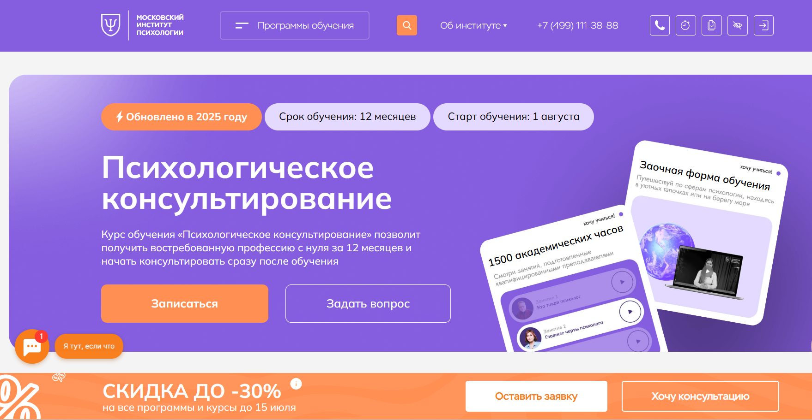
- ✅ Официальный сайт: mip.institute
- 💸 Цена: от 180 000 ₽ в год (тариф «Лайт»), от 265 000 ₽ в год (тариф «Стандарт»)
- 💳 Рассрочка: от 15 000 ₽/мес, возможна беспроцентная оплата
- 📚 Формат: дистанционные образовательные занятия, видеолекции, задания, тесты, вебинары, групповая работа
- ⏳ Продолжительность: 12 месяцев
- 📜 Документ: диплом о профессиональной переподготовке с квалификацией «Психолог-консультант»
- 📝 Трудоустройство: поддержка карьерного центра, доступ к профессиональному сообществу
- 🔷 Для кого подходит курс: для людей с высшим или средним профессиональным образованием, желающих получить профессию психолога-консультанта
Особенности:
Программа обучения позволяет освоить методы психологической помощи в дистанционном формате с гибким графиком. Все материалы размещены на удобной платформе, что позволяет совмещать обучение с работой или другими делами. Особое внимание уделено развитию практических навыков консультирования через интервизии, супервизии и разбор реальных кейсов. Студенты проходят 644 академических часа практики, участвуют в балинтовских группах и получают доступ к библиотеке Юрайт. Обучение проходит онлайн, без необходимости посещения очных занятий. В результате слушатели могут вести частную практику, консультировать клиентов в любых форматах и оказывать квалифицированную помощь после окончания обучения.
Чему учатся студенты:
- Оценивать эмоциональное состояние клиентов
- Диагностировать личностные и психологические особенности
- Применять методы консультирования индивидуально и в группе
- Разрабатывать программы поддержки и сопровождения
- Работать с травмой, тревожными состояниями, кризисами и проблемами самооценки
- Проводить онлайн- и офлайн-сессии по психологическим запросам
Преподаватели:
- Рубцова Надя — практикующий психолог
- Додонова Ирина Викторовна — практикующий специалист
- Сергачева Ксения Викторовна — опытный психолог-консультант
Преимущества:
- Обучение проходит полностью дистанционно на удобной платформе
- Возможность начать практику сразу после получения диплома
- Гибкий график и возможность совмещать с работой
- Поддержка наставников и преподавателей
- Доступ к библиотеке, вебинарам и сообществу выпускников
- Интенсивная практика, включая интервизии и балинтовские группы
- Скидки до 30% на обучение при раннем бронировании
- Подходит для начала новой карьеры или смены профессионального направления
Отзывы учеников:
Слушатели часто отмечают, что курс имеет удобный дистанционный формат и насыщенную практику. Подчеркивают понятную подачу материала, постоянную обратную связь от преподавателей и возможность общаться с одногруппниками. Многие начинают практиковать уже в процессе прохождения обучения и довольны качеством подготовки.
Перейти на официальный сайт курса2. 🏆 Психолог-консультант — Академия НАДПО
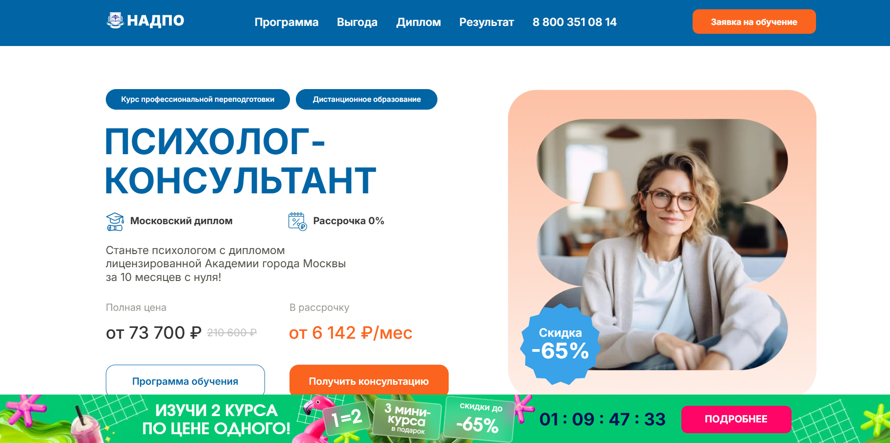
- ✅ Официальный сайт: psy.nadpo.ru
- 💸 Цена: 73 700 ₽ (со скидкой 65% от полной стоимости 210 600 ₽).
- 💳 Рассрочка: от 6 142 ₽ в месяц без процентов.
- 📚 Формат: дистанционный формат обучения, видеолекции, воркшопы, супервизии, задания с проверкой и обратной связью от преподавателей.
- ⏳ Продолжительность: 10 месяцев.
- 📜 Документ: диплом о профессиональной переподготовке установленного образца, внесённый в реестр ФИС ФРДО.
- 📝 Трудоустройство: бесплатный доступ к платформе для работы с клиентами, помощь с резюме и собеседованиями, поддержка HR-экспертов.
- 🔷 Для кого подходит курс: тем, кто хочет сменить профессию, получить навыки консультирования, начать или развить психологическую практику.
Особенности:
Программа рассчитана на дистанционную форму и идеально подходит для тех, кто хочет совмещать обучение с работой. Сразу после окончания курса выпускники получают доступ к платформе с реальными клиентами. В процессе прохождения обучения слушатели осваивают не только методы психологической помощи, но и получают поддержку по карьерному росту. Студенты работают с преподавателями в гибком графике, участвуют в воркшопах и супервизиях. Материалы курса всегда доступны на удобной платформе, а практическая часть начинается уже с первых недель. Формат обучения охватывает все аспекты профессии психолога-консультанта.
Чему учатся студенты:
- Основам психологии личности и семейной психологии
- Методам консультирования и психокоррекции
- Анатомии и физиологии ЦНС, клинической психологии
- Психологии кризисов и экстремальных ситуаций
- Профессиональной этике и ведению частной практики
- Психотерапевтическим подходам и работе с зависимостями
- Социальной и организационной психологии
Преподаватели:
- Зотова Мария Юрьевна — магистр психоаналитического бизнес-консультирования, автор образовательных программ, руководитель курса
- Тарасов Сергей Васильевич — кандидат психологических наук, стаж 24 года
- Сигаев Сергей Юрьевич — кандидат педагогических наук, стаж 21 год
- Молокостова Анна Михайловна — кандидат психологических наук, стаж 25 лет
- Кишиневская Марина Александровна — высшая педагогическая категория, стаж 27 лет
- Челнокова Ирина Александровна — кандидат психологических наук, стаж 16 лет
- Елисеева Екатерина Алексеевна — психолог, преподаватель, стаж 13 лет
- Егорова Наталья Николаевна — кандидат психологических наук, стаж 22 года
Преимущества:
- Дистанционный формат обучения с практическими заданиями
- Более 550 часов практики с опытными психологами
- 0% рассрочка + возможность получения кешбэка
- Работа с реальными клиентами уже во время обучения
- Бесплатный доступ к библиотекам ЛитРес и Библиоклуб
- Возможность обучения с нуля — без психологического образования
- Доступ ко всем материалам курса без ограничений
- Профориентационная и карьерная поддержка от HR-экспертов
Отзывы учеников:
Выпускники Академии НАДПО отмечают удобный формат дистанционного обучения, актуальность учебных материалов и высокий профессионализм преподавателей. Особенно ценится практическая направленность занятий и возможность сразу применять знания на практике. Большинство студентов довольны результатами прохождения курсов и рекомендуют обучение другим.
Перейти на официальный сайт курса3. 🏆 Практический психолог – Онлайн-институт Smart
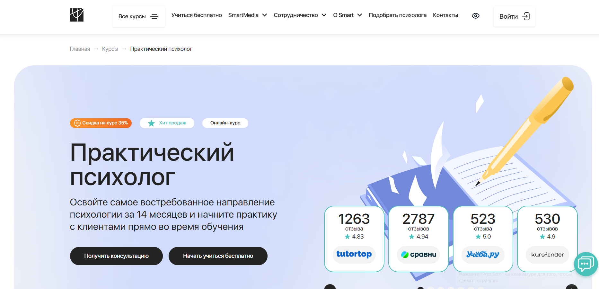
- ✅ Официальный сайт: smart-inc.ru
- 💸 Цена: от 234 900 ₽ (со скидкой 35%).
- 💳 Рассрочка: от 9788 ₽ в месяц, до 24 месяцев, без переплат.
- 📚 Формат: дистанционное обучение: видеоуроки, практические задания, тесты, супервизии, сессии «вопрос-ответ».
- ⏳ Продолжительность: 14 месяцев.
- 📜 Документ: диплом о профессиональной переподготовке, диплом MBA (по тарифу).
- 📝 Трудоустройство: предоставление клиентов, карьерные консультации, супервизии и профессиональное сообщество.
- 🔷 Для кого подходит курс: начинающим психологам, педагогам, воспитателям, специалистам без опыта, людям, желающим сменить профессию.
Особенности:
Обучение организовано в полностью дистанционном формате с возможностью совмещать его с работой и личной жизнью. Программа построена вокруг практики: студенты работают с реальными кейсами и получают регулярную обратную связь от менторов и преподавателей. Используется удобная образовательная платформа, где материалы доступны 24/7. Курсы включают разные виды поддержки — тьюторы, супервизоры, менторы, коучи. Участники проходят обучение в мини-группах, что помогает глубже осваивать навыки консультирования. Возможна бесплатная вводная часть с сертификатом. Завершив обучение, выпускники получают официально признанный диплом и могут начать вести психологическую практику.
Чему учатся студенты:
- Понимать научные основы психологического консультирования
- Применять методы психологической поддержки в различных ситуациях
- Выстраивать доверительные отношения с клиентами
- Отрабатывать практические навыки консультирования в терапевтических тройках
- Использовать современные методы консультирования в частной практике
- Работать с группами и организациями
- Проводить консультации по вопросам самооценки, карьеры, семьи
Преподаватели:
- Марина Сокольская — доктор психологических наук, профессор, академик РАЕ, доцент ВАК, преподаватель МИФИ
- Светлана Варнавская — практикующий психолог, специалист в области консультирования
Преимущества:
- Обучение проходит полностью дистанционно на удобной платформе
- Диплом регистрируется в ФРДО и признается на территории РФ и за рубежом
- Доступ к материалам курса остается навсегда
- Возможность начать психологическую практику уже во время обучения
- Разнообразие форматов обучения: видеоуроки, супервизии, коучинг, мини-группы
- Поддержка преподавателей и кураторов 24/7
- Включение в профессиональное сообщество выпускников и преподавателей
- Дополнительные модули: личный бренд, онлайн-кабинет психолога и маркетинг
Отзывы учеников:
Выпускники отмечают насыщенную практическую часть и высокий уровень преподавания. Большинство студентов довольны дистанционным форматом и возможностью совмещать обучение с работой. Положительно оценивают поддержку преподавателей и доступность материалов. Особенно ценят возможность начать практиковать уже во время прохождения курса.
Перейти на официальный сайт курса4. Профессия психолог-консультант – Психодемия
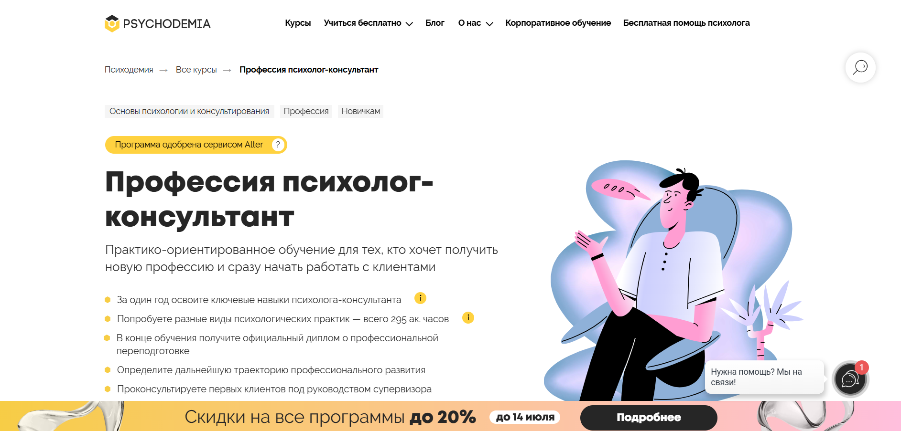
- ✅ Официальный сайт: psychodemia.com
- 💸 Цена: от 265 000 ₽ до 363 788 ₽ в зависимости от тарифа
- 💳 Рассрочка: доступна, от 11 041 ₽/мес в месяц условия зависят от тарифа
- 📚 Формат: дистанционное обучение на удобной платформе: видеоуроки, интерактивный тренажер, тесты, практика, демосессии
- ⏳ Продолжительность: 14 месяцев, около 8 часов в неделю
- 📜 Документ: диплом о профессиональной переподготовке установленного образца (от 515 до 557 ак. часов)
- 📝 Трудоустройство: начало практики с клиентами под супервизией, поддержка при выборе специализации
- 🔷 Для кого подходит курс: начинающим, студентам, действующим психологам с нехваткой практики
Особенности:
Программа обучения по направлению «психологическое консультирование» реализуется в дистанционном формате и сочетает теорию с насыщенной практикой. Используется удобная образовательная платформа с доступом к материалам и поддержкой кураторов. Студенты проходят обучение под руководством опытных преподавателей и начинают работу с реальными клиентами еще до завершения курса. Формат обучения включает интерактивные упражнения, живые занятия и супервизию. Благодаря практико-ориентированному подходу слушатели осваивают методы консультирования и формируют навыки психологической помощи. Программа дает возможность гибко совмещать обучение с работой или другими делами. После окончания обучения выдается диплом о переподготовке, дающий право вести частную психологическую практику.
Чему учатся студенты:
- Осваивать методы консультирования и ключевые навыки общения с клиентом
- Проводить психологическую сессию от начала до завершения
- Концептуализировать случай и формулировать цели терапии
- Работать с частыми запросами: тревожность, выгорание, личные границы
- Выстраивать доверительные отношения и поддерживать терапевтический альянс
- Понимать границы профессиональных компетенций
- Применять методы психологической помощи в практической работе
- Продвигать свои услуги и находить первых клиентов
Преподаватели:
- Мария Данина — кандидат психологических наук, практикующий психолог с 17-летним стажем, основатель Психодемии
- Татьяна Альмухаметова — научный руководитель курса, психотерапевт, супервизор, исследователь в области психотерапии
Преимущества:
- Обучение проходит дистанционно, без привязки к месту
- Много практики: от 295 ак. часов в разных форматах
- Поддержка преподавателей и кураторов на протяжении всего курса
- Начало практики с клиентами под супервизией
- Выбор подхода в психотерапии и специализации
- Доступ к вебинарам, мастермайндам и встречам выпускников
- Гибкий график занятий: утренние и вечерние группы
- Диплом установленного образца с правом ведения психологической практики
Отзывы учеников:
Студенты отмечают удобный формат дистанционного обучения и насыщенную практическую часть. Положительно выделяют работу с кураторами, поддержку преподавателей и возможность начать консультации с реальными клиентами до окончания курсов. Часто упоминаются полезные учебные материалы, структурированная программа и уверенность, которую дает курс для старта в новой профессии.
Перейти на официальный сайт курса5. Психолог-консультант – Talentsy
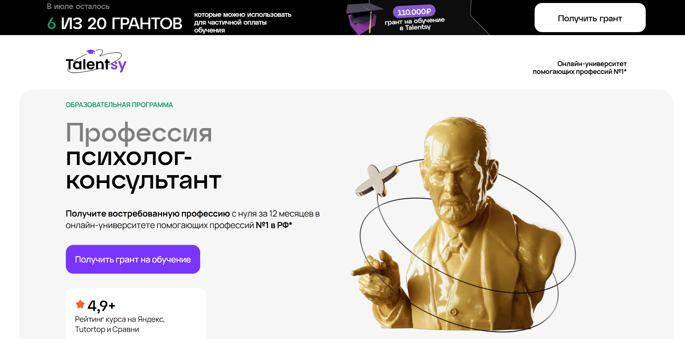
- ✅ Официальный сайт: talentsy.ru
- 💸 Цена обучения: от 112 500 ₽ со скидкой по гранту.
- 💳 Рассрочка: от 9 375 ₽ в месяц от 3, 6, 12 или 24 месяца без переплат, первый платёж — через 2 месяца.
- 📚 Формат: дистанционное обучение: видеолекции, PDF-конспекты, домашние задания, мини-группы, супервизии, тренажёры, доступ с любых устройств.
- ⏳ Продолжительность: 12 месяцев.
- 📜 Документ: диплом о профессиональной переподготовке РФ + международный диплом MBA.
- 📝 Трудоустройство: предоставляют первых 10 клиентов, учат продвижению и ведению практики.
- 🔷 Для кого подходит курс: для тех, кто хочет освоить новую профессию с нуля или подтвердить навыки в сфере психологического консультирования.
Особенности:
Программа разработана с учётом требований профессиональных стандартов и построена на интегративном подходе. Обучение проходит в дистанционном формате на удобной платформе с круглосуточным доступом ко всем материалам. Курс включает 450 часов практической работы, охватывает 10 подходов в психологической практике и предполагает реальные консультации ещё в процессе прохождения. Студенты получают обратную связь от кураторов, поддержку преподавателей и возможность работать с клиентами уже во время обучения. Подходит тем, кто хочет совмещать учёбу с работой и учиться в комфортном темпе. Дипломы действительны в РФ и за рубежом.
Чему учатся студенты:
- Навыкам консультирования и проведения психологической сессии
- Выявлению запросов клиента и определению подходящих методов помощи
- Основам клинической, семейной, возрастной и кризисной психологии
- Работе с популярными запросами: тревожность, самооценка, отношения, выгорание
- Построению личного бренда психолога и привлечению клиентов
- Применению 10 психологических подходов на практике
Преподаватели:
- Ольга Виндекер — практикующий психолог, член Российской Психотерапевтической Лиги, автор книг
- Инна Васильева — доктор психологических наук, профессор, специалист в области психологии интуиции
- Елена Николаева — доктор биологических наук, заведующая кафедрой возрастной психологии
- Анжелика Вильгельм — кандидат психологических наук, супервизор, преподаватель высшей школы
- Юлия Лебедева — клинический психолог, детский и взрослый психоаналитический терапевт
- Рустам Муслумов — кандидат психологических наук, доцент УрФУ
- Евгения Меглинская — консультант по пищевому поведению, эксперт телеканалов
- Ксения Кунникова — нейропсихолог, руководитель научных грантов
- Александр Рикель — замдекана факультета психологии МГУ
Преимущества:
- Обучение в дистанционном формате — удобно совмещать с работой
- Два диплома: российский установленного образца и международный MBA
- Первые реальные клиенты уже во время обучения
- Доступ ко всем материалам сохраняется навсегда
- Поддержка кураторов и супервизоров весь срок обучения
- Платформа доступна 24/7 с любых устройств
- Грант на обучение — до 110 000 ₽
- Образование соответствует ФГОС и профессиональным стандартам
Отзывы учеников:
Студенты отмечают удобный формат дистанционного обучения, высокую квалификацию преподавателей и насыщенность практической части курса. Положительно оценивают наличие обратной связи и возможность уже в процессе прохождения курсов начать психологическую практику. Также хвалят за профессиональную переподготовку и поддержку преподавателей.
Перейти на официальный сайт курса6. Профессия психолог-консультант – Нетология
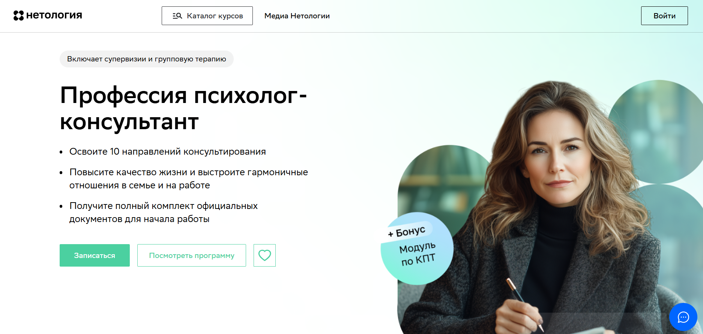
- ✅ Официальный сайт: netology.ru
- 💸 Цена: от 151 600 ₽ до 330 600 ₽ со скидкой 40%
- 💳 Рассрочка: доступна от 4 433 ₽/мес., на 36 месяцев без переплат
- 📚 Формат: дистанционное обучение, вебинары в реальном времени, супервизии, групповая терапия, домашние задания, кейсы, поддержка координатора
- ⏳ Продолжительность: 14 месяцев, 1100 часов
- 📜 Документ: диплом о профессиональной переподготовке и удостоверение о повышении квалификации по когнитивно-поведенческой терапии
- 📝 Трудоустройство: помощь с регистрацией на сайтах-агрегаторах, продвижение личного бренда, упаковка портфолио
- 🔷 Для кого подходит курс: для начинающих, практикующих специалистов и тех, кто хочет структурировать знания и освоить практическую психологию
Особенности:
Курс создан для освоения профессии психолога-консультанта с упором на развитие практических навыков консультирования. Обучение проходит на удобной платформе с использованием дистанционных образовательных технологий. Студенты учатся в мини-группах с поддержкой кураторов и супервизоров. Программа основана на биопсихосоциальной модели и включает реальные кейсы, групповое консультирование и обучение методам психологической помощи. После прохождения курсов выпускники получают два документа о квалификациях, что дает возможность работать в онлайне или оффлайн сразу после окончания обучения. Подходит для тех, кто совмещает обучение с работой благодаря удобному графику и дистанционному формату.
Чему учатся студенты:
- Осваивать 10 модальностей психологического консультирования
- Работать с тревожностью, стрессами, неуверенностью
- Диагностировать депрессию, выгорание, ПТСР
- Понимать семейные и личностные конфликты
- Вести психологическую практику онлайн и оффлайн
- Продвигать свои услуги и находить клиентов
Преподаватели:
- Ксения Кунникова — кандидат психологических наук, ведущий научный сотрудник нейромаркетинговой лаборатории, организатор Международного форума Cognitive neuroscience, руководитель стартапов и обладатель грантов РНФ и РФФИ
Преимущества:
- Полностью дистанционное обучение на удобной платформе
- Выдается диплом о профессиональной переподготовке и удостоверение о повышении квалификации
- Интенсивная практика с реальными клиентами и супервизией
- Развитие навыков консультирования в мини-группах
- Занятия по продвижению услуг и построению личного бренда
- Помощь в размещении на популярных психологических агрегаторах
- Групповая и индивидуальная терапия в процессе прохождения обучения
- Гибкий график, удобный для совмещения с работой
Отзывы учеников:
Студенты отмечают сильную поддержку преподавателей и координаторов, насыщенную практику и доступность теории. Плюсами называют возможность дистанционно обучаться, чёткую структуру модулям и полезные занятия по продвижению. Курсы помогают освоить профессию, обрести уверенность и начать консультировать уже в процессе обучения.
Перейти на официальный сайт курса7. Психолог-консультант – Московский институт технологий и управления
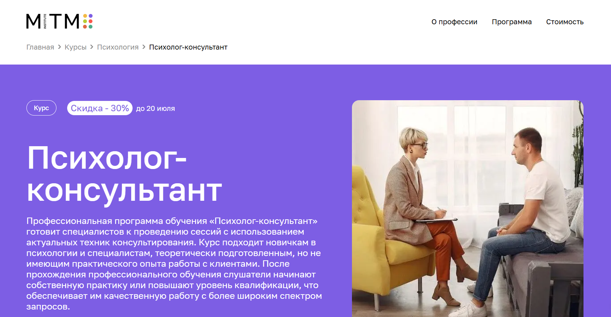
- ✅ Официальный сайт: mitm.institute
- 💸 Цена: 157 080 ₽ (со скидкой 30% — 110 040 ₽)
- 💳 Рассрочка: беспроцентная рассрочка от 9 170 ₽/мес на 12 месяцев, доступна оплата через Тинькофф Банк
- 📚 Формат: дистанционное обучение на удобной платформе, видеолекции, вебинары, практические задания, тесты, супервизии, поддержка преподавателей
- ⏳ Продолжительность: 12 месяцев, 1500 часов обучения
- 📜 Документ: диплом о профессиональной переподготовке государственного образца
- 📝 Трудоустройство: программа трудоустройства после завершения обучения
- 🔷 Для кого подходит курс: начинающие в профессии, социальные работники, педагоги, люди без опыта, а также желающие применять знания в личной жизни
Особенности:
Программа подходит тем, кто планирует освоить профессию психолога-консультанта с нуля или повысить квалификацию. Обучение проходит в дистанционном формате, что позволяет совмещать его с работой или другими занятиями. Курс ориентирован на освоение практических навыков, включая ведение клиента, интерпретацию запроса, выстраивание терапевтического контакта. Используются современные методы психологической поддержки и консультирования. Студенты проходят обучение по модулям, включая интерактивные вебинары и анализ реальных кейсов. Доступ к учебным материалам сохраняется на весь период обучения. Поддержка кураторов и супервизоров обеспечивает комфортное освоение материала. Завершив обучение, выпускники получают диплом и могут начать самостоятельную психологическую практику.
Чему учатся студенты:
- Проводить психологическую работу от первичной консультации до финальной сессии
- Анализировать запрос клиента и выстраивать стратегию консультирования
- Применять методы психологической диагностики и консультирования
- Работать с внутренними конфликтами, ПТСР, утратой, кризисами, самооценкой
- Выстраивать доверительный контакт с клиентами разных возрастов
- Понимать особенности семейного и группового консультирования
Преподаватели:
- Елена Айрапетян — интегративный психолог, член АКПП, магистр психологии
- Анна Ермоленко — практикующий психолог, член АКПП, выпускница МГППУ
- Анна Селезнева — семейный психолог, продюсер курсов, руководитель факультета психологии
Преимущества:
- Полностью дистанционный формат обучения без привязки к месту
- Поддержка кураторов и преподавателей на протяжении всей программы
- Гибкий график — учитесь в любое удобное время
- Возврат 13% от стоимости обучения через налоговый вычет
- Возможность совмещать обучение с работой
- Актуальные программы, адаптированные под требования работодателей
- Практикумы и супервизии, приближенные к реальной психологической практике
- Документ государственного образца после окончания курса
Отзывы учеников:
Студенты хвалят курс за понятную подачу материала и насыщенность практикой. Часто отмечают удобный дистанционный формат, возможность учиться в комфортном темпе, поддержку преподавателей и полезность изучаемых тем. Положительно отзываются о супервизиях и возможности обмениваться опытом с другими участниками курса в чатах.
Перейти на официальный сайт курса8. Практическая психология — МШПП (Международная школа практической психологии)
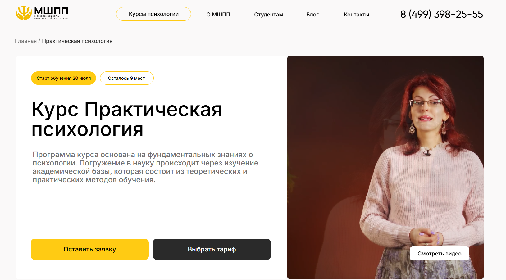
- ✅ Официальный сайт: mspp.online
- 💸 Цена обучения: от 140 000 ₽ (возможна экономия 13% при получении налогового вычета)
- 💳 Рассрочка: от 3 900 ₽/мес, от 3 до 36 месяцев без переплат
- 📚 Формат: дистанционные занятия, видеолекции, практические задания, супервизии, очные встречи, доступ к дополнительным материалам
- ⏳ Продолжительность: 10 месяцев (включая подготовку и итоговую аттестацию)
- 📜 Документ: диплом о профессиональной переподготовке установленного образца
- 📝 Трудоустройство: помощь центра карьеры МШПП, сопровождение до завершения испытательного срока
- 🔷 Для кого подходит курс: для начинающих, студентов, руководителей, практикующих специалистов и тех, кто хочет освоить профессию психолога-консультанта
Особенности:
Обучение проходит в дистанционном формате на удобной платформе с постоянной поддержкой преподавателей. Программа разработана экспертами и включает более 1100 академических часов, с акцентом на методы психологической диагностики и навыки консультирования. Студенты обучаются на базе теоретических и практических подходов, включая работу с реальными клиентами. Программа подходит для тех, кто хочет совмещать обучение с основной занятостью, получать знания в гибком формате и строить психологическую практику под руководством опытных менторов. Выпускники курса получают диплом, позволяющий вести частную практику и работать с международными клиентами.
Чему учатся студенты:
- Проводить психологическое консультирование онлайн и офлайн
- Применять современные методы психодиагностики
- Организовывать и вести тренинги, групповые сессии
- Работать с клиентскими запросами и кризисными состояниями
- Формировать личный бренд и продвигать услуги этично
- Использовать методы профориентационной диагностики
- Оказывать помощь в профилактике профессионального выгорания
Преподаватели:
- Ирина Осипенко — Кандидат психологических наук, доцент
- Анна Шавырина — Кандидат психологических наук
- Анфиса Корнеева — Дипломированный и практикующий психолог
- Мария Березина — Клинический и консультативный психолог
- Инна Кылымник — Рекомендованный гештальт-терапевт, супервизор
Преимущества:
- Полностью дистанционная форма с доступом к материалам навсегда
- Возможность вести частную практику после окончания курса
- Карьерный центр помогает трудоустроиться
- Международный диплом MBA по окончании (при выборе тарифа)
- Платформа проста в использовании и не требует специальных программ
- Доступ к онлайн-вебинарам по всем направлениям психологии
- Работа в мини-группах и сопровождение наставника
- Система супервизий и интервизий для закрепления практических навыков
Отзывы учеников:
Студенты отмечают высокое качество дистанционного обучения, разнообразие практики, профессионализм преподавателей и удобный формат. Часто выделяют доступность материалов, поддержку кураторов и возможность совмещать обучение с работой. Многих привлекает структурированная программа и уверенность, которую они приобретают в процессе прохождения курсов.
Перейти на официальный сайт курса9. Психолог-консультант с психоанализом: Методы и технологии оказания психологических услуг – Московский Институт Профессионального Образования
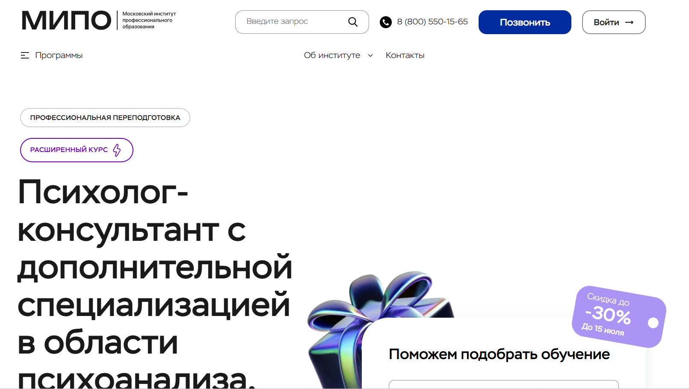
- ✅ Официальный сайт: mipo.msk.ru
- 💸 Цена: от 109 914 ₽ (до 177 838 ₽ в зависимости от тарифа, скидки до 30%)
- 💳 Рассрочка: от 4 580 ₽ в месяц на срок до 24 месяцев
- 📚 Формат: обучение полностью в дистанционном формате, вебинары, кейсы, практические задания, видеоуроки, тесты, поддержка кураторов
- ⏳ Продолжительность: от 6 до 12 месяцев (1124 академических часа)
- 📜 Документ: диплом о профессиональной переподготовке установленного образца с регистрацией в ФИС-ФРДО
- 📝 Трудоустройство: помощь центра карьеры, востребованность на рынке — рост спроса на 43%
- 🔷 Для кого подходит курс: новички, практикующие психологи без диплома, те, кто хочет применять психологию в жизни и работе
Особенности:
Программа предлагает освоить профессию психолога-консультанта в дистанционном формате с акцентом на психоанализ и методы консультирования. Все занятия проходят онлайн через удобную образовательную платформу. Студенты осваивают не только теорию, но и практические навыки консультирования, участвуют в вебинарах, получают обратную связь от преподавателей. Доступ ко всем материалам сохраняется на протяжении курса, что позволяет учиться в собственном темпе. Обучение сопровождают персональные менторы и методисты. Завершив курс, выпускники получают диплом с официальной регистрацией, что открывает путь к официальной практике и позволяет работать в психологической сфере как в частной, так и в корпоративной среде.
Чему учатся студенты:
- Установлению консультативного контакта
- Применению методов психологического консультирования
- Этике и структуре консультативного процесса
- Психоанализу как подходу в практике
- Техникам активного слушания
- Пониманию отличий между тренингом и психотерапией
- Технологиям коучинга и бизнес-консультирования
- Деловому общению и взаимодействию с клиентами
Преподаватели:
- Урывчикова Татьяна Геннадьевна — Клинический психолог, нейропсихолог, член ассоциации КПТ
- Перемолотова Ирина Александровна — Член международной ассоциации арт-терапевтов, практикующий психолог
- Цяпало Анна — Психоаналитический коуч, сертифицированный сексотерапевт
- Миркина Елена — Клинический психолог, президент фонда развития человеческого потенциала
- Сальникова Дарья — Специальный психолог, научный сотрудник РАО
- Балобанов Василий — Семейный консультант, автор обучающей методики, эксперт 1 канала
Преимущества:
- Полностью дистанционный формат обучения на удобной платформе
- Выдается диплом установленного образца с регистрацией в ФРДО
- Доступ к практическим видеоурокам и обратной связи от преподавателей
- Индивидуальное сопровождение кураторов и менторов
- Возможность совмещать обучение с работой
- Подходит как новичкам, так и действующим специалистам
- Осваиваются востребованные методы психологической помощи
- Развитие практических навыков консультирования с применением дистанционных технологий
Отзывы учеников:
Студенты чаще всего отмечают удобный формат обучения, высокое качество обратной связи от кураторов и преподавателей, а также возможность изучать материалы в любое удобное время. Многие довольны тем, что курс помогает перейти к реальной практике и открыть частную консультационную деятельность после получения диплома.
Перейти на официальный сайт курса10. Консультативная психология: эффективные стратегии практической психологической помощи – Институт прикладной психологии в социальной сфере
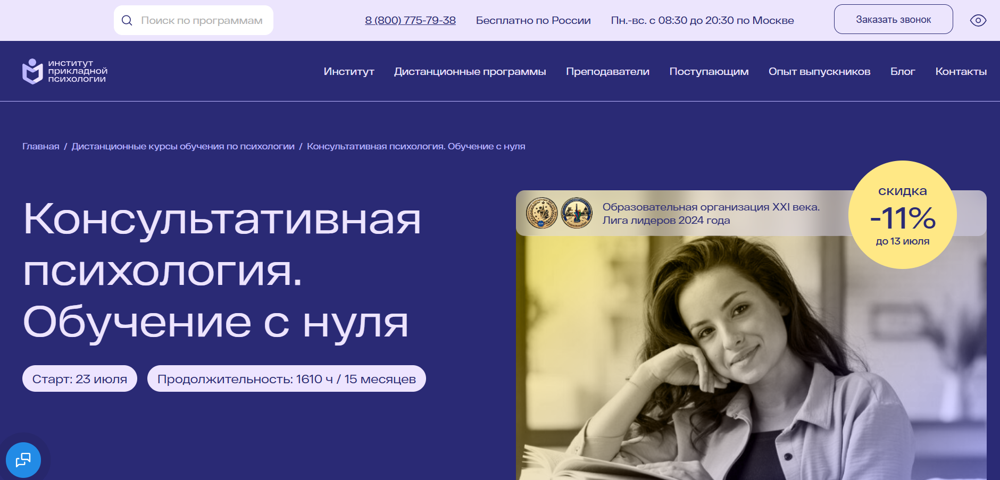
- ✅ Официальный сайт: ippss.ru
- 💸 Цена: от 108 200 ₽ (со скидкой 11% )
- 💳 Рассрочка: от 10 100 ₽/мес, 0% от банка или оплата частями через Яндекс Пэй
- 📚 Формат: дистанционное обучение, видеолекции, вебинары, домашние задания с проверкой, практические задания, супервизии, консультации
- ⏳ Продолжительность: 15 месяцев / 1610 академических часов
- 📜 Документ: диплом о профессиональной переподготовке с квалификациями «Практический психолог» и «Психолог-консультант»
- 📝 Трудоустройство: стажировки у партнеров, карьерные консультации, доступ к базе вакансий
- 🔷 Для кого подходит курс: для тех, кто хочет освоить профессию психолога-консультанта с нуля без профильного образования
Особенности:
Обучение проходит в полностью дистанционном формате на удобной платформе с круглосуточным доступом к материалам. Курсы не требуют высшего психологического образования и позволяют совмещать обучение с работой. Программа включает академическую базу, практические навыки консультирования и стажировку. Курсы построены так, чтобы не только обучить теориям, но и дать реальную практику консультирования. В процессе прохождения студенты получают обратную связь от преподавателей и доступ к вебинарам, личным консультациям и супервизиям. Диплом зарегистрирован в ФИС ФРДО и подтверждает право вести психологическую практику официально.
Чему учатся студенты:
- Применять методы психологического консультирования
- Осваивать техники диагностики и помощи клиенту
- Разрабатывать и проводить консультационные сессии
- Создавать программы тренингов
- Работать с кейсами в области семейного, личностного и карьерного консультирования
- Получать обратную связь и развивать профессиональные компетенции
Преподаватели:
- Дорофеева Елена Владимировна — преподаватель дисциплины «Введение в профессию», практикующий психолог
- Плющева Ольга Александровна — клинический психолог, супервизор, преподаватель
- Пустыльникова Виктория Юрьевна — преподаватель, психолог, специалист по транзактному анализу
- Тимофеева Анастасия Александровна — клинический психолог, полимодальный психотерапевт, обучающий терапевт
Преимущества:
- Удобный график: обучение проходит дистанционно, доступно в любое время
- Официальный диплом, зарегистрированный в федеральной системе
- Две квалификации по завершении курсов
- Доступ к онлайн-библиотеке с 10 000+ вебинарами
- Поддержка кураторов и преподавателей на всех этапах
- Стажировка и реальная практика с клиентами
- Карьерные консультации и помощь с резюме
- Возможность совмещать учебу с работой
Отзывы учеников:
Слушатели часто отмечают качество преподавания, внимательное отношение кураторов и удобную организацию обучения. В отзывах хвалят практические задания, понятный формат подачи материала и реальные кейсы. Многие студенты после окончания успешно начали собственную практику или нашли работу в психологических центрах.
Перейти на официальный сайт курса11. Обучение профессии психолога – Академия EDPRO
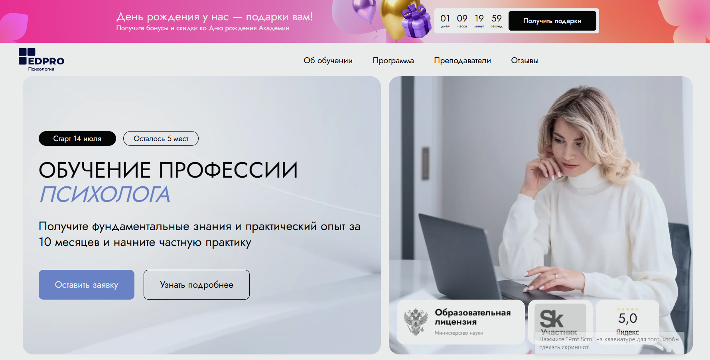
- ✅ Официальный сайт: edprodpo.com
- 💸 Цена: индивидуально, от 87 972 ₽ возможны скидки ко дню рождения академии.
- 💳 Рассрочка:от 3 666 ₽/мес до 24 месяцев без переплат, первый платёж — со второго месяца.
- 📚 Формат: дистанционное обучение, включает лекции, практикумы, домашние задания, супервизии, самостоятельную работу и поддержку куратора.
- ⏳ Продолжительность: 10 месяцев.
- 📜 Документ: диплом государственного образца и международный диплом MBA.
- 📝 Трудоустройство: консультации с реальными клиентами в процессе обучения, поддержка в начале практики.
- 🔷 Для кого подходит курс: для тех, кто хочет освоить профессию психолога-консультанта с нуля, усилить навыки консультирования или получить прикладные знания в сфере психологии.
Особенности:
Программа направлена на тех, кто хочет освоить психологическую практику без лишних теорий. Благодаря дистанционной форме, обучение проходит на удобной платформе, где материалы доступны в любое время. Слушатели получают опыт работы с клиентами уже во время прохождения курсов. Программа построена по принципу «от себя к профессии»: сначала — самоанализ и рефлексия, затем — методы психологической помощи. Выпускники получают два диплома, что открывает больше возможностей для профессионального роста. Поддержка кураторов и опытных преподавателей делает процесс обучения структурированным и комфортным.
Чему учатся студенты:
- Методам консультирования и психотерапии
- Проведению индивидуальных и групповых консультаций
- Работе с семейными и личностными запросами
- Освоению практических навыков для оказания психологической помощи
- Пониманию основ психологии и транзактного анализа
- Ведению частной практики с реальными клиентами
Преподаватели:
- Катерина Руденко — психолог, супервизор, автор программы, специалист в методе транзактного анализа
- Светлана Трофимова — куратор практических занятий, опытный практикующий психолог
- Команда из более чем 40 практикующих преподавателей — члены международных профессиональных ассоциаций
Преимущества:
- Обучение проходит дистанционно на удобной образовательной платформе
- 3 раза больше практики по сравнению с институтами
- Сопровождение опытных специалистов на всех этапах обучения
- Доступ к практическим заданиям и реальным кейсам
- Гибкий график обучения — можно совмещать с работой
- Два диплома: государственный и международный
- Развитие личной осознанности и эмоционального интеллекта
- Поддержка после завершения курсов
Отзывы учеников:
Студенты отмечают комфорт дистанционного формата, душевную атмосферу на практиках, структурированность обучения и ценность супервизий. Многие начали консультировать уже в процессе обучения. Особо выделяют профессионализм преподавателей и глубокую работу с собой, которая позволила им не только освоить профессию, но и изменить свою жизнь.
Перейти на официальный сайт курса12. Психолог-консультант. Психологическое консультирование – Московская Бизнес Академия
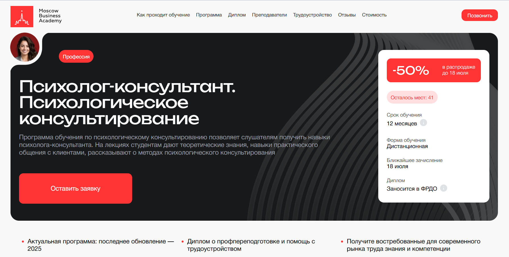
- ✅ Официальный сайт: moscow.mba
- 💸 Цена: от 116 496 ₽ со скидкой 50%
- 💳 Рассрочка: 4 854 ₽ в месяцдо 24 месяцев, первый платеж — через месяц
- 📚 Формат: дистанционное обучение, видеолекции, воркшопы, практические задания, вебинары
- ⏳ Продолжительность: 12 месяцев
- 📜 Документ: диплом о профессиональной переподготовке, сертификат установленного образца, запись в ФРДО
- 📝 Трудоустройство: помощь с резюме, портфолио, вакансии, навыки для собеседований
- 🔷 Для кого подходит курс: студенты, выпускники, специалисты в соцсфере и здравоохранении, желающие освоить профессию психолога-консультанта
Особенности:
Программа реализуется в полностью дистанционном формате с использованием современных образовательных технологий. Обучение проходит на удобной платформе, доступной из любой точки мира. Студенты получают теоретические знания и практические навыки консультирования, включая методы психологической поддержки. Курс актуален в 2026 году и ежегодно обновляется в соответствии с требованиями работодателей. Освоить профессию можно без отрыва от работы, благодаря гибкому графику и интерактивной обратной связи от преподавателей и кураторов. Включены бонусные модули, расширяющие знания в смежных направлениях психологии. После окончания обучения слушатели получают диплом установленного образца и помощь в трудоустройстве.
Чему учатся студенты:
- Понимать базовые направления практической психологии
- Применять методы консультирования в работе с клиентами
- Проводить индивидуальные и групповые консультации
- Работать с техниками арт-терапии, КПТ и гештальт-подхода
- Оценивать психологическое состояние с помощью психодиагностики
- Развивать эмоциональный интеллект и навыки управления конфликтами
- Вести профессиональную психологическую практику в различных сферах
Преподаватели:
- Мария Егиазарова — Выпускник МГУ, эксперт по психологическому консультированию, бизнес-психолог
- Елена Дарменко — Психолог с 20-летним опытом, член IACCP, специалист по нейромаркетингу
- Гунявин Андрей — Практикующий психоаналитик
Преимущества:
- Обучение проходит дистанционно на удобной образовательной платформе
- 70% курса — практика, приближенная к реальной работе
- Доступ к видеоматериалам и материалам лекций 24/7
- Актуальные методы психологической помощи и консультирования
- Поддержка кураторов и преподавателей на всех этапах обучения
- Диплом включается в ФРДО, что подтверждает легальность образования
- Возможность совмещать обучение с основной работой
- 65% выпускников находят работу в течение 3 месяцев после окончания
Отзывы учеников:
Выпускники курса отмечают профессионализм преподавателей, доступную подачу материала и большое количество практики. Часто подчеркивается удобный формат обучения, возможность совмещать учебу с работой и качественная обратная связь от кураторов. Студенты благодарны за помощь в составлении резюме и карьерную поддержку.
Перейти на официальный сайт курса13. Психолог-консультант. Методы и технологии оказания психологических услуг – Национальный центральный институт развития дополнительного образования
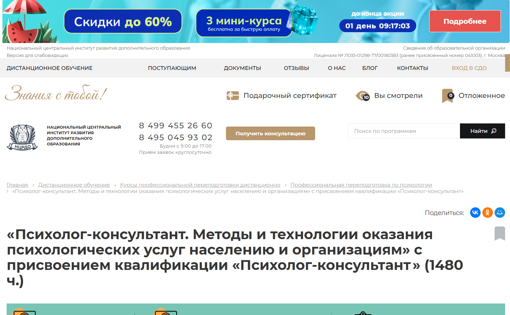
- ✅ Официальный сайт: ncrdo.ru
- 💸 Цена: 67 800 ₽ (вместо 103 400 ₽ )
- 💳 Рассрочка: 1 883 ₽/мес на 36 месяцев без переплат
- 📚 Формат: дистанционное обучение, видеолекции, практические задания, онлайн-тесты, вебинары, доступ к дополнительным материалам
- ⏳ Продолжительность: 10 месяцев (1480 академических часов)
- 📜 Документ: диплом о профессиональной переподготовке установленного образца
- 📝 Трудоустройство: помощь в трудоустройстве, HR-консультации, добавление документов в ФРДО
- 🔷 Для кого подходит курс: для специалистов с высшим или средним профессиональным образованием, желающих освоить профессию психолога-консультанта
Особенности:
Обучение проходит полностью в дистанционном формате, что делает его удобным форматом для совмещения с работой. Студенты получают доступ к образовательной платформе, где размещены все необходимые материалы: лекции, вебинары, методички. Особое внимание уделяется практической подготовке и освоению методов консультирования. Программа включает регулярные онлайн-групповые занятия с преподавателями, что обеспечивает поддержку и вовлеченность в процесс. Прохождение обучения возможно в собственном темпе, все задания и тесты можно сдавать в удобное время. Обучение завершается итоговой аттестацией, по результатам которой выдается диплом, позволяющий вести психологическую практику. После завершения курсов выпускники получают постоянный доступ к платформе и дополнительным материалам.
Чему учатся студенты:
- Методам психологического консультирования
- Психодиагностике и работе с клиентами в различных состояниях
- Оказанию психологической помощи в кризисных ситуациях
- Работе с зависимым и девиантным поведением
- Построению консультативной сессии и плану коррекции
- Использованию коучинговых технологий в практике
- Пониманию физиологии высшей нервной деятельности
- Проведению групповых и индивидуальных консультаций
Преподаватели:
- Мельникова Елена Васильевна — опыт научно-практической деятельности с 2010 года
- Тышкевич Марина Юрьевна — с 2006 года работает в сфере психологии
- Шевченко Дария Игоревна — практикующий специалист с 2018 года
- Салихова Мария Романовна — эксперт с 2007 года
Преимущества:
- Возможность совмещать обучение с работой благодаря дистанционным технологиям
- Поддержка преподавателей и участие в онлайн-группах
- Диплом позволяет работать в государственных и частных организациях
- Доступ к библиотеке ЛитРес и платформе БиблиоКлуб включён в стоимость
- Все учебные материалы доступны в любое время
- Курс помогает освоить навыки консультирования и начать частную практику
- Возможность возврата 13% от стоимости курса через налоговый вычет
- Выпускники вносятся в Федеральный реестр документов об образовании
Отзывы учеников:
Студенты отмечают удобный формат обучения и доступность материалов. Особенно часто выделяют поддержку преподавателей, полезность практических заданий и простую навигацию по платформе. Также положительно оценивают возможность учиться в собственном темпе и применять полученные знания сразу на практике.
Перейти на официальный сайт курса14. Практическая психология с дополнительной специализацией в области психологического консультирования — АНО «НИИДПО»
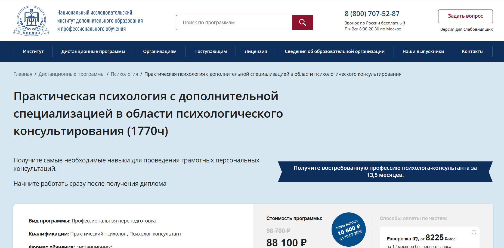
- ✅ Официальный сайт: niidpo.ru
- 💸 Цена: 88 100 ₽ (обычная цена — 98 700 ₽).
- 💳 Рассрочка: 0% на 12 месяцев, платеж от 8 225 ₽/мес без первого взноса.
- 📚 Формат: дистанционные лекции, тесты, домашние задания, вебинары, доступ к библиотеке и консультации с преподавателями.
- ⏳ Продолжительность: 13,5 месяцев (ускоренный формат — 8 месяцев).
- 📜 Документ: диплом о профессиональной переподготовке установленного образца.
- 📝 Трудоустройство: поддержка Центра развития карьеры, супервизии, обучение продвижению услуг.
- 🔷 Для кого подходит курс: для желающих начать психологическую практику и для специалистов, стремящихся расширить компетенции в психологическом консультировании.
Особенности:
Программа разработана для тех, кто хочет освоить востребованную профессию психолога-консультанта через дистанционный формат обучения. Студенты обучаются на удобной платформе, получают доступ к более 13 000 вебинарам, теоретическим модулям, заданиям и практическим кейсам. Учащиеся проходят подготовку под руководством опытных преподавателей с учеными степенями. В рамках курса можно изучать материалы в любом темпе, получая обратную связь. После окончания обучения слушатели получают бессрочный доступ к лекциям и бонусным материалам. Выпускникам предоставляется возможность развивать карьеру с помощью карьерного консультанта и освоить методы продвижения своих услуг.
Чему учатся студенты:
- Психологическому консультированию и коучинговым технологиям
- Работе с конфликтами и методам медиации
- Психодиагностике и анализу поведения
- Методам семейного консультирования и психотерапии
- Организации частной практики и формированию стоимости услуг
Преподаватели:
- Богданова Наталья Александровна — кандидат психологических наук
- Колиниченко Ирина Александровна — кандидат психологических наук, доцент, специалист по социальной психологии
- Семенова Наталья Александровна — кандидат психологических наук
Преимущества:
- Обучение полностью проходит дистанционно через удобную платформу
- Возможность начать карьеру в психологии сразу после получения диплома
- Доступ к библиотеке вебинаров и учебным материалам остается навсегда
- Карьерная поддержка и супервизии с экспертами
- Программа включает более 28 дисциплин с практическими заданиями
- Рассрочка без процентов и без первоначального взноса
- Дополнительные бонусы — факультативы и сертификаты компетенций
- Материалы можно изучать в любое удобное время и с любого устройства
Отзывы учеников:
Студенты положительно отзываются о дистанционном формате и гибком графике. Часто отмечают качество обратной связи, разнообразие тем, понятную подачу материала и практическую направленность курса. Многим понравился доступ к вебинарам и возможность построения карьеры с помощью специалистов Центра развития карьеры.
Перейти на официальный сайт курса15. Психолог-консультант. Методы и технологии оказания психологических услуг – Институт Профессионального Образования
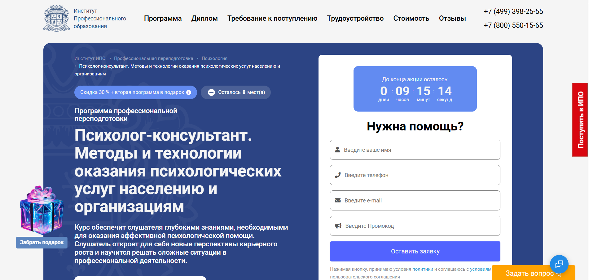
- ✅ Официальный сайт: ipo.msk.ru
- 💸 Цена обучения: со скидкой 30% итоговая стоимость — 76 050 ₽ вместо 108 643 ₽
- 💳 Рассрочка: от 3 168 ₽/мес до 24 месяцев, без переплат
- 📚 Формат: дистанционные образовательные курсы, видеолекции, тесты, домашние задания, вебинары, практические кейсы
- ⏳ Продолжительность: 13 месяцев (1114 часов)
- 📜 Документ: диплом о профессиональной переподготовке установленного образца
- 📝 Трудоустройство: карьерные консультации, помощь в составлении резюме, тренировка интервью, рекомендации по поиску работы
- 🔷 Для кого подходит курс: начинающим, действующим психологам и консультантам, педагогам, соцработникам, желающим освоить навыки консультирования и получить новую профессию
Особенности:
Курс ориентирован на освоение практической психологии в дистанционном формате, что позволяет учиться без отрыва от основной деятельности. Образовательная платформа ИПО предлагает гибкий график и постоянную поддержку преподавателей. В обучении акцент сделан на развитие навыков консультирования и психологической практики, включая индивидуальные и групповые подходы. В процессе прохождения курсов используются методы психологической диагностики, системной терапии, работа с тревожностью, стрессом и кризисами. После окончания обучения слушатели получают диплом и могут оказывать психологические услуги на профессиональном уровне.
Чему учатся студенты:
- Понимать цели и этапы психологического консультирования
- Применять методы консультирования и психодиагностики
- Оказывать помощь при тревожных расстройствах, ОКР, в работе с горем
- Работать с сопротивлением клиентов
- Использовать техники оценки эффективности
- Формулировать запросы и подбирать методики под разные ситуации
- Развивать базовые и сложные навыки консультирования
Преподаватели:
- Мария Андреевна Егиазарова — Тренер, психолог, психолог-консультант
- Наталья Николаевна Бербер — Кандидат психологических наук, профессиональный психолог
- Наталья Викторовна Рыбальченко — Профессиональный психолог, преподаватель философии
Преимущества:
- Обучение проходит дистанционно с доступом к удобной платформе
- Программа полностью соответствует требованиям профессиональных стандартов
- Выдается диплом с правом на ведение психологической практики
- Разнообразный контент: от теории до кейс-методов и практики
- Поддержка кураторов и менторов на каждом этапе
- Возможность совмещать обучение с работой благодаря гибкому графику
- Доступ к материалам и вебинарам даже после завершения курса
- Подарок — вторая программа бесплатно
Отзывы учеников:
Выпускники курсов ИПО часто отмечают качественную подачу материала, удобный формат обучения и практическую направленность программы. Многие благодарят преподавателей за поддержку и доступность объяснений, особенно ценят возможность учиться в дистанционном формате. Среди плюсов — гибкий график и реальная польза от пройденных занятий в дальнейшей работе.
Перейти на официальный сайт курса16. Психолог-консультант с дополнительной специализацией в области психотерапии – Центральная академия профессиональной переподготовки и повышения квалификации кадров
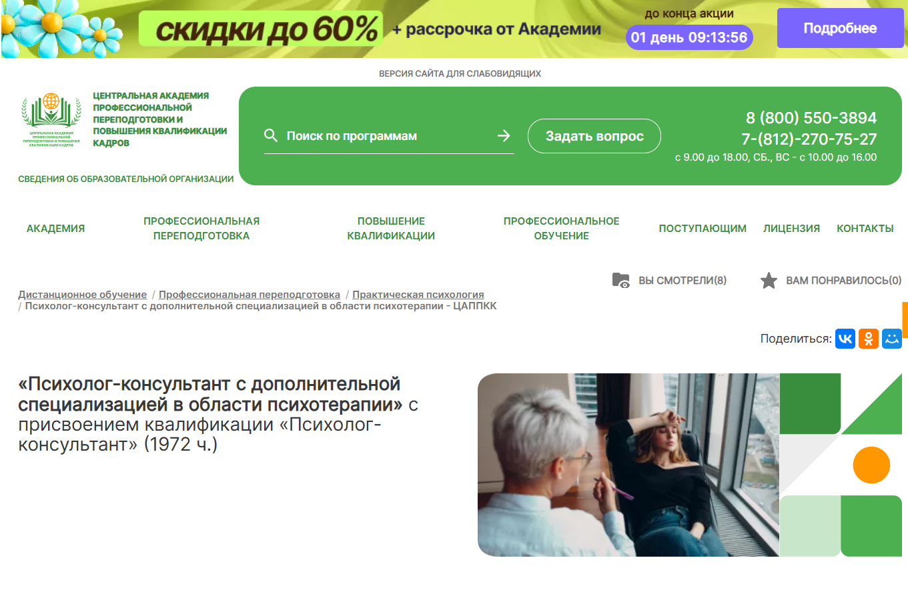
- ✅ Официальный сайт: appkk.ru
- 💸 Цена: 101 600 ₽ (скидка 23% от полной стоимости 132 000 ₽)
- 💳 Рассрочка: до 36 месяцев, платеж от 2 822 ₽ в месяц
- 📚 Формат: заочный формат обучения с использованием дистанционных образовательных технологий, вебинары, библиотека, личный куратор, техподдержка
- ⏳ Продолжительность: 15 месяцев (1972 академических часа)
- 📜 Документ: диплом о профессиональной переподготовке, внесённый в ФИС ФРДО
- 📝 Трудоустройство: помощь HR-наставника, актуальные вакансии, карьерные консультации
- 🔷 Для кого подходит курс: для психологов, социальных работников, педагогов, медиков, родителей, студентов и всех, кто хочет освоить профессию психолога-консультанта
Особенности:
Курс проходит в дистанционном формате, что позволяет совмещать обучение с работой или личной жизнью. Студенты получают доступ к удобной платформе, где собраны учебные модули, вебинары и библиотека дополнительных материалов. Особое внимание уделено практическим навыкам: предусмотрены задания, направленные на освоение методов психологического консультирования. Обучение проходит под руководством профессиональных кураторов. Важной частью программы является подготовка к работе с реальными клиентами, включая онлайн-консультирование. После окончания студенты получают диплом установленного образца, который заносится в государственный реестр. Формат обучения гибкий, подходит для любых уровней занятости. В процессе обучения обеспечивается постоянная поддержка преподавателей.
Чему учатся студенты:
- Методам консультирования и психотерапии
- Работе с зависимым поведением и семейными конфликтами
- Проведению онлайн-диагностики и дистанционных консультаций
- Применению когнитивно-поведенческой, гештальт- и арт-терапии
- Углублённому анализу патопсихологии, нейропсихологии и психофизиологии
Преподаватели:
- Анастасия Регнер — HR-наставник, бизнес-тренер, эксперт по стратегическим коммуникациям, участник международных конференций
Преимущества:
- Обучение полностью проходит онлайн на удобной платформе
- Бессрочный доступ к курсу и записям вебинаров
- Программа совмещает теорию и практику
- Диплом вносится в федеральный реестр ФИС ФРДО
- Гибкий график позволяет учиться в удобное время
- Есть возможность оплатить курс в рассрочку без переплат
- Индивидуальная поддержка куратора на всём пути обучения
- Поддержка в трудоустройстве после завершения программы
Отзывы учеников:
В отзывах на Яндекс, Google и 2GIS выпускники отмечают удобный дистанционный формат, высокое качество преподавания, доступность материалов и реальную практическую ценность курса. Подчеркивают внимательность кураторов и помощь в профессиональном развитии.
Перейти на официальный сайт курса17. Профессия психолога-консультанта – Международная школа профессий
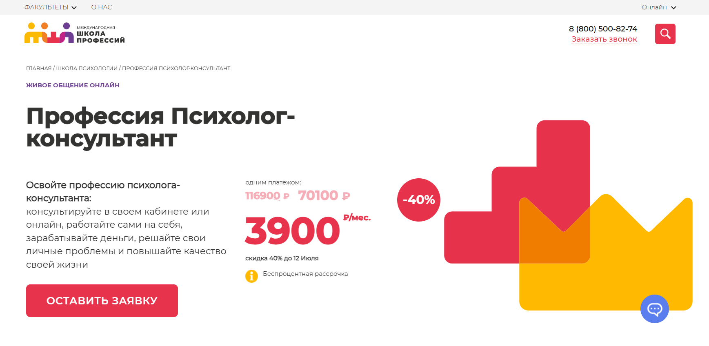
- ✅ Официальный сайт: online.videoforme.ru
- 💸 Цена: 116 900 ₽ → 70 100 ₽ при оплате
- 💳 Рассрочка: беспроцентная, от 3 900 ₽ в месяц.
- 📚 Формат: дистанционное обучение, живые вебинары, записи занятий, домашние задания, тесты, работа с наставниками.
- ⏳ Продолжительность: 64 недели / 170 академических часов.
- 📜 Документ: диплом о профессиональной переподготовке, при желании — международного образца.
- 📝 Трудоустройство: помощь в запуске частной практики и поддержка в продвижении услуг.
- 🔷 Для кого подходит курс: для тех, кто хочет получить навыки консультирования, освоить практическую психологию и начать психологическую практику онлайн или офлайн.
Особенности:
Обучение проходит в полностью дистанционном формате с гибким графиком. Студенты могут совмещать учебу с работой или путешествиями. Доступ к удобной платформе предоставляется на 3 месяца, включая все учебные материалы и записи вебинаров. Практическая направленность позволяет применять методы консультирования сразу в процессе прохождения курсов. Курс разработан с учетом профессиональных стандартов и включает обучение с опытными психологами. Для студентов доступны социальные программы и возврат налогового вычета. Поддержка преподавателей и личный наставник помогают на всех этапах обучения. После окончания программы слушатель получает диплом установленного образца и готов работать с реальными клиентами.
Чему учатся студенты:
- Проводить индивидуальные и групповые консультации
- Использовать методы психодиагностики
- Работать с тревожными состояниями и паническими атаками
- Анализировать возрастные особенности клиента
- Выстраивать структуру сеанса с первого до последнего
- Развивать эмоциональный интеллект и навыки общения
- Продвигать услуги психолога через соцсети и инфопродукты
Преподаватели:
- Алла Логинова — коуч, трансформационный тренер, более 5 лет практики, эксперт по МАК-картам
- Елизавета Астанина — НЛП-мастер, регрессолог, 10 лет опыта, помогла более 300 клиентам
- Ирина Керницкая — коуч, бизнес-психоаналитик, наставник для начинающих специалистов
- Александра Федорова — психолог по тревожным расстройствам, член Ассоциации экспертов ЭИ
- Надежда Дмитриева — КПТ-терапевт, клинический психолог, практикует более 3 лет
Преимущества:
- Полностью дистанционный формат обучения
- Поддержка опытных наставников на всех этапах
- Пошаговая практика в консультировании с живыми разборами
- Возможность совмещать с работой или семьей
- Доступные условия оплаты, включая социальные программы
- Гибкий график без привязки к месту проживания
- Освоение методов консультирования разных направлений
- Получение диплома с возможностью международного признания
Отзывы учеников:
Слушатели курса отмечают, что обучение проходит в удобной форме, преподаватели отзывчивы и помогают освоить даже сложные темы. Большинство студентов благодарны за практическую направленность и возможность сразу применять навыки. Отдельно выделяют живые занятия и удобный дистанционный формат обучения.
Перейти на официальный сайт курса18. Психологическое консультирование – Учебный центр АПОК
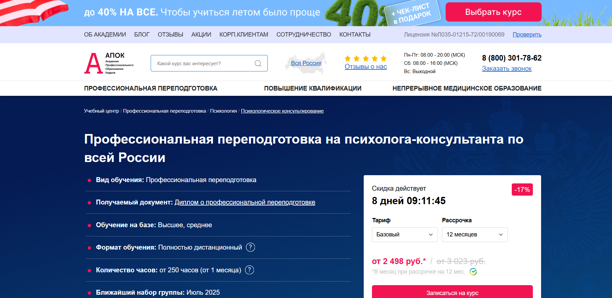
- ✅ Официальный сайт: apokdpo.ru
- 💸 Цена: от 29 980 ₽ (со скидкой 17% ).
- 💳 Рассрочка: 12 месяцев, от 2 498 ₽ в месяц, без переплат.
- 📚 Формат: дистанционное обучение, методические пособия, онлайн-тесты, домашние задания, занятия с преподавателем (в Премиум-пакете).
- ⏳ Продолжительность: от 1 месяца, 250–1100 академических часов.
- 📜 Документ: диплом о профессиональной переподготовке установленного образца.
- 📝 Трудоустройство: диплом помогает продвигаться в профессии, доступен налоговый вычет.
- 🔷 Для кого подходит курс: для лиц с высшим или средним профессиональным образованием, желающих освоить профессию психолога-консультанта.
Особенности:
Обучение полностью проходит онлайн, что делает курс удобным для совмещения с работой. В процессе прохождения студенты получают доступ к методическим материалам, учебным планам и заданиям на удобной платформе. Образовательная программа включает ключевые модули, направленные на развитие навыков консультирования, освоение практической психологии и методов консультирования. После окончания курсов документы доставляются бесплатно по всей России. Данные об образовании вносятся в реестр ФИС ФРДО. Студенты осваивают профессию в удобном формате, без необходимости очного присутствия.
Чему учатся студенты:
- Проводить индивидуальное и групповое консультирование
- Применять методы психодиагностики и психоанализа
- Выстраивать консультативный процесс и классифицировать типы клиентов
- Использовать элементы краткосрочной терапии
- Работать с пограничными состояниями и особенностями личности
- Овладевать профессиональной этикой и требованиями к психологу-консультанту
Преподаватели:
- Преподавательский состав не указан на сайте. В курс включены занятия с опытными специалистами в Премиум-пакете.
Преимущества:
- Формат дистанционного обучения позволяет заниматься в любое удобное время
- Бесплатная доставка диплома после окончания программы
- Возможность корректировать учебный план под себя (в некоторых тарифах)
- Регистрация в ФИС ФРДО — официальное подтверждение квалификации
- Поддержка преподавателей по мере прохождения курса
- Быстрое получение документов — от 5 до 30 календарных дней
- Пошаговая система оформления — от заявки до получения диплома
- Скидки и акции для семей и постоянных слушателей
Отзывы учеников:
Студенты отмечают удобный формат обучения, качественные учебные материалы и лояльную рассрочку. Часто хвалят возможность проходить обучение без отрыва от работы, а также профессиональную поддержку и помощь менеджеров в процессе поступления. Также положительно оценивают гибкость учебного графика и актуальность знаний для практического применения.
Перейти на официальный сайт курса19. Психологическое консультирование – ЭКОДПО
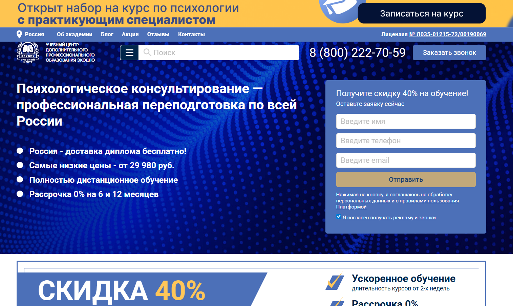
- ✅ Официальный сайт: ecodpo.ru
- 💸 Цена: от 29 980 ₽ (при оплате сразу)
- 💳 Рассрочка: от 2 498 ₽/мес 0% на 6 и 12 месяцев
- 📚 Формат: дистанционное обучение, видеолекции, тесты, вебинары, индивидуальные занятия
- ⏳ Продолжительность: от 1,5 до 4 месяцев (от 250 часов)
- 📜 Документ: диплом о профессиональной переподготовке установленного образца
- 📝 Трудоустройство: подходит для работы в психологических центрах, реабилитационных учреждениях, образовательных организациях
- 🔷 Для кого подходит курс: для специалистов с высшим или средним профессиональным образованием, желающих получить профессию психолога-консультанта
Особенности:
Программа реализуется в дистанционном формате через удобную образовательную платформу с круглосуточным доступом к материалам. Все обучение проходит онлайн без очных встреч, что позволяет совмещать учебу с работой. По завершению курсов выпускники получают диплом установленного образца, внесённый в ФИС ФРДО. Обучение проходит по гибкому графику, включая теорию и практику психологического консультирования. Программа аккредитована, соответствует требованиям ФЗ №273. Доставка диплома осуществляется бесплатно по всей России. Поддержка преподавателей доступна на всём протяжении учебного процесса.
Чему учатся студенты:
- Применению методов психологического консультирования
- Психодиагностике индивидуальных и семейных проблем
- Организации онлайн и очного консультирования
- Построению этичного взаимодействия с клиентом
- Использованию проективных методик и краткосрочной терапии
- Разбору типологии клиентов и стадий консультационного процесса
Преподаватели:
- Курс ведут практикующие специалисты с опытом в психологической практике и консультировании (ФИО на официальном сайте не указаны)
Преимущества:
- Полностью дистанционное обучение без отрыва от работы
- Бесплатная пересдача итоговой аттестации
- Гибкий график прохождения курсов
- Документы выдаются в течение 1-14 дней после завершения обучения
- Внесение данных о дипломе в ФИС ФРДО
- Доступ к учебным материалам 24/7
- Индивидуальные консультации с преподавателями
- Возможность разработки персонального учебного плана
Отзывы учеников:
Студенты чаще всего отмечают удобный формат обучения, возможность совмещать курсы с работой, качественные материалы, а также простоту взаимодействия с платформой. Благодарят преподавателей за обратную связь и внимание к каждому слушателю. Особенно выделяют бесплатную доставку диплома и поддержку после окончания курса.
Перейти на официальный сайт курсаБесплатные курсы по обучению на психолога-консультанта
Что важно для профессии психолога – Психодемия
✅ Официальный сайт: psychodemia.ruОписание и особенности:
- Мини-курс создан для тех, кто планирует освоить профессию психолога-консультанта или интересуется практической психологией.
- Формат обучения полностью дистанционный, занятия проходят онлайн на удобной платформе без привязки ко времени.
- В курс включены 5 коротких уроков по 15 минут, каждый сопровождается тестированием и списком рекомендованной литературы.
- Студенты изучают методы психологической помощи, интегративные подходы и навыки консультирования, важные для работы с клиентами.
- Обучение проходит в удобной форме: короткие видео, практические материалы и гайд по профессии психолога.
- Подходит для тех, кто хочет пройти бесплатное обучение и систематизировать знания по психологическому консультированию.
- Курс ведут опытные преподаватели с практикой более 10 лет, включая кандидата психологических наук.
- Доступ к материалам остаётся навсегда, обучение можно проходить в собственном темпе.
- После завершения обучения выдаётся сертификат без необходимости прохождения итоговых экзаменов.
Все о профессии психолог-консультант – Психодемия
✅ Официальный сайт: psychodemia.ruОписание и особенности:
- Бесплатный мини-курс для знакомства с профессией психолога-консультанта и оценки личной готовности к сфере практической психологии.
- Курс включает 12 коротких уроков продолжительностью от 3 до 15 минут в дистанционном формате обучения.
- Программа охватывает карьерные пути, методы консультирования, этические принципы, юридические аспекты и продвижение специалиста.
- Учебный процесс построен на удобной платформе и позволяет проходить обучение в своём темпе с любого устройства.
- Доступны дополнительные материалы: чек-листы, практические задания, список литературы и шаблоны документов для начала психологической практики.
- Подходит тем, кто хочет освоить навыки консультирования, сменить профессию или изучить основы практического психологического консультирования.
- После прохождения курса выдается сертификат, подтверждающий завершение обучения.
- Преподаватель – практикующий психолог с опытом более 17 лет, лауреат Национального конкурса и эксперт дистанционных образовательных программ.
- Участники получают доступ к материалам бесплатно и навсегда.
Бесплатный вводный курс Профессия психолог-консультант – Talentsy
✅ Официальный сайт: psy.talentsy.ruОписание и особенности:
- Курс помогает освоить основы психологического консультирования в дистанционном формате за 5 уроков и 2 часа контента.
- Подходит для начинающих и тех, кто хочет сменить профессию или углубиться в практическую психологию.
- Обучение проходит на удобной платформе, адаптированной для дистанционных образовательных программ.
- Доступна поддержка профессионального психолога, можно задать личные вопросы по теме уроков.
- В рамках программы — 7 бонусов на сумму 18 000 ₽ с полезными материалами по методам консультирования.
- Участники изучат реальные форматы работы, методы психологической помощи, навыки консультирования и привлечения клиентов.
- Курс позволяет пройти обучение без отрыва от работы и совмещать его с любым удобным графиком.
- После прохождения обучения выдается электронный сертификат.
- До 13.07.2026 доступ к курсу полностью бесплатный, регистрация открыта.
- Программа разработана опытными специалистами с высшим психологическим образованием и профессиональными квалификациями.
Кто такой психолог-консультант?
Психолог-консультант — это специалист, оказывающий профессиональную психологическую помощь людям, сталкивающимся с различными жизненными трудностями. Его главная задача — не лечить, как психиатр, а поддерживать, направлять и помогать клиенту найти внутренние ресурсы для решения проблем.
Что делают психологи-консультанты и чем занимаются?
Работа психолога-консультанта включает широкий спектр задач, направленных на улучшение психоэмоционального состояния клиента. Он не ставит диагнозы, а помогает человеку разобраться в себе и в своих переживаниях.
- Проведение индивидуальных и групповых консультаций
- Работа с эмоциональными проблемами (стресс, тревога, страхи, депрессия)
- Поддержка в кризисных ситуациях (потери, развод, переезд, выгорание)
- Помощь в саморазвитии и постановке личных целей
- Семейное и парное консультирование
- Поддержка в вопросах воспитания детей
Психолог-консультант может работать как в частной практике, так и в организациях, школах, медицинских учреждениях и службах поддержки.
Что должен знать и уметь психолог-консультант?
Для эффективной работы специалисту необходимо обладать не только знаниями, но и развитыми личностными качествами.
- Знание основ психологии и психотерапии
- Навыки активного слушания и эмпатии
- Умение выстраивать доверительные отношения с клиентами
- Понимание механизмов психических процессов и поведения
- Способность сохранять нейтралитет и конфиденциальность
- Знание этики психологического консультирования
Также важно владеть различными методами и техниками: когнитивно-поведенческой терапии, гештальт-подхода, арт-терапии и др.
Востребованность и зарплаты психологов-консультантов в России
В 2026 году профессия психолога-консультанта продолжает набирать популярность. Современные реалии — нестабильность, стресс, эмоциональное выгорание — создают высокий спрос на квалифицированную помощь.
- Начинающие специалисты зарабатывают в среднем от 35 000 до 60 000 рублей в месяц
- Опытные консультанты с частной практикой — от 80 000 до 200 000 рублей и выше
- Стоимость одной консультации — от 1500 до 6000 рублей, в зависимости от региона и квалификации
Наиболее востребованы специалисты в крупных городах — Москва, Санкт-Петербург, Екатеринбург, Казань. Однако онлайн-консультирование стирает географические границы, позволяя работать с клиентами по всей стране и за её пределами.
Как стать психологом-консультантом и где учиться?
Чтобы работать психологом-консультантом, необходимо пройти профильное обучение. Оптимальный путь — получение высшего образования по направлению «Психология», затем — дополнительное профессиональное образование (ДПО) или курсы по консультативной практике.
- Бакалавриат или магистратура по психологии (4–6 лет)
- Повышение квалификации — от 250 до 600 академических часов
- Обязательная личная терапия и супервизии
- Постоянное профессиональное развитие (семинары, конференции, супервизорские группы)
Какими качествами должен обладать хороший консультант?
Успешный психолог-консультант — это не только профессионал, но и человек с определёнными личностными характеристиками:
- Эмпатия и способность к сопереживанию
- Высокий уровень саморефлексии
- Гибкость мышления и толерантность
- Умение слушать и слышать
- Этичность и ответственность
Преимущества и недостатки профессии
Как и любая работа с людьми, профессия психолога имеет свои плюсы и минусы.
- Преимущества: высокая значимость профессии, возможность помогать людям, гибкий график, перспектива роста и развития
- Недостатки: эмоциональное выгорание, необходимость постоянного обучения, высокая ответственность
Что включает в себя обучение на психолога-консультанта?
Обучение на психолога-консультанта включает теоретические и практические модули, направленные на освоение методов психологической помощи, навыков консультирования, ведения психологической практики и работы с клиентами. Процесс обучения охватывает психологическое образование, методы консультирования и современные подходы к работе с индивидуальными и групповыми запросами.
Какие преимущества имеет дистанционное обучение?
Дистанционное обучение позволяет осваивать профессию психолога-консультанта в удобной форме, совмещая обучение с работой или другими делами. Благодаря удобному формату и доступу к образовательной платформе, студенты могут изучать материалы в своем ритме, получать поддержку преподавателей и сдавать задания в онлайн-режиме.
Какие модули включает программа переподготовки по психологическому консультированию?
Программа профессиональной переподготовки включает в себя учебные модули, посвящённые практической психологии, семейному консультированию, социальной психологии, методам психотерапии и психологической диагностике. В рамках прохождения обучения также проводится реальная практика и итоговая аттестация.
Какие навыки консультирования можно освоить на курсах?
В процессе прохождения курсов студенты осваивают навыки консультирования, включая установление контакта с клиентом, активное слушание, ведение беседы, интерпретацию психологических проблем и выработку стратегии помощи. Также большое внимание уделяется практическим навыкам и методам психологической коррекции.
Кому подойдет обучение в дистанционном формате?
Дистанционный формат обучения подходит тем, кто хочет освоить профессию психолога-консультанта с нуля или повысить квалификацию без отрыва от работы. Особенно он удобен для людей, которые ищут удобный формат получения образования и возможность учиться на образовательной платформе с доступом к материалам 24/7.
Сколько длится обучение и как оно проходит?
Обучение проходит дистанционно и длится в среднем от 4 до 12 месяцев в зависимости от выбранной программы. Все занятия проводятся на удобной платформе, где студенты получают доступ к учебным материалам, видеоурокам, тестам и практическим заданиям. Процесс обучения включает регулярную поддержку преподавателей и кураторов.
Какой диплом выдается после окончания обучения на психолога-консультанта?
После завершения курсов слушатель получает диплом установленного образца о дополнительном профессиональном образовании. Выдается диплом, подтверждающий квалификацию психолога-консультанта и позволяющий работать в различных направлениях психологии.
Можно ли совмещать обучение с работой?
Да, дистанционное обучение позволяет совмещать обучение с работой благодаря гибкому графику и удобной образовательной платформе. Студенты могут проходить модули в любом удобном формате, выполнять задания по своему расписанию и получать поддержку преподавателей.
Какие требования к поступающим на программу переподготовки по психологическому консультированию?
Для поступления на программу профессиональной переподготовки по психологическому консультированию требуется наличие высшего образования (необязательно психологического). Также принимаются слушатели со средним профессиональным образованием — в зависимости от конкретной программы.
Какие методы психологической помощи изучаются на курсе?
На курсе рассматриваются методы психологической помощи, включая индивидуальное и групповое консультирование, методы психотерапии, психодиагностику и коррекционную работу. Особое внимание уделяется практическому применению знаний и отработке навыков консультирования.
Какие карьерные возможности дает профессия психолога-консультанта?
Профессия психолога-консультанта открывает возможности для работы в психологических центрах, образовательных организациях, социальных службах и в частной практике. Выпускники курсов могут оказывать психологические услуги, вести семейное консультирование и групповые консультации.
Нужна ли практика во время обучения?
Да, прохождение практики является важной частью программы. Психологическая практика проходит под руководством опытных преподавателей и позволяет освоить практическую психологию, работая с реальными кейсами. Это помогает слушателям уверенно применять навыки консультирования в своей будущей деятельности.
Какая поддержка оказывается студентам во время обучения?
Во время дистанционного обучения студенты получают поддержку преподавателей, обратную связь на задания, рекомендации по прохождению модулей и психологической практике. Доступ к материалам, вебинарам и чатам с кураторами осуществляется через удобную платформу.
Что входит в стоимость обучения?
Стоимость обучения включает доступ к всем учебным модулям, учебным материалам, практическим заданиям, онлайн-вебинарам, консультациям с преподавателями и диплом установленного образца по окончании. Также часто предоставляются дополнительные материалы и скидки на программы.
Можно ли начать обучение на психолога-консультанта сразу после подачи заявки?
Да, после подачи заявки и оплаты обучения студент получает доступ к платформе и может начать изучение материалов в любом удобном формате. Обучение проводится полностью дистанционно, что позволяет начать обучение в любое время.
------------------------------------------------
Реклама. Информация о рекламодателе по ссылкам в статье.